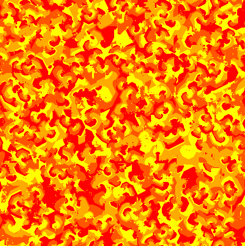
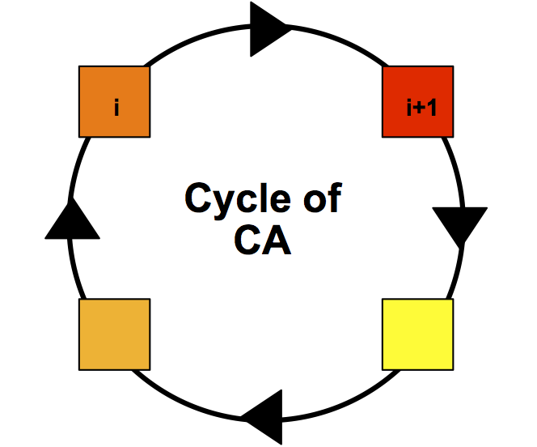
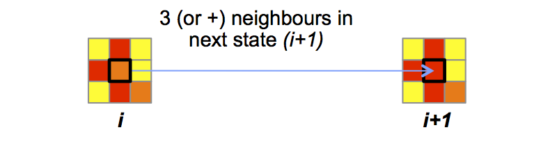

The cyclic cellular automaton by David Griffeath
This is a self-replicating cellular automaton. It is made of a regular grid of "cells", each containing a "state" chosen from a finished set (4 in this case: yellow, light orange, dark orange, red):
The CA evolves over time:
The state of a cell at time t+1 depends on its state at time t and the state of its neighbours. At each time step, a rule (called Transition Function) is applied simultaneously to all cells in the grid, producing a new "generation" of cells entirely dependent on the previous generation.
Each cell remains unchanged until some neighboring cell has a modular value exactly one unit larger than that of the cell itself. In other words, the transition function is: a cell changes from one state (i) to the next (i+1) in the state cycle as soon as i+1 is present in at least 3 neighboring cells :

From a random initial state of the grid, we obtain this type of complex results:

Grid at step 2500:

- Download the model (zipfile, 7Ko)
- For more information, contact the authors.